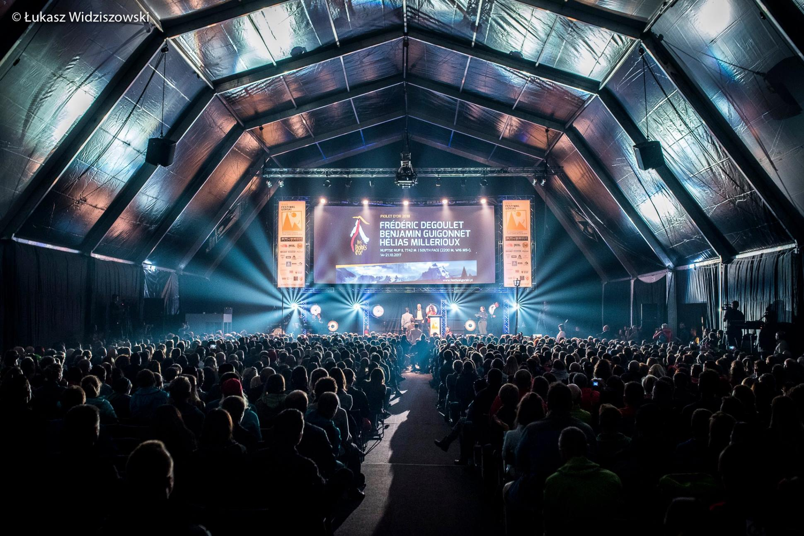
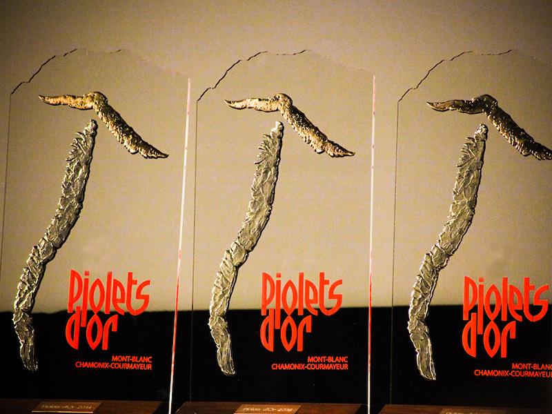

Szczególne wydarzenia
W tym roku Lądek Zdrój został uznany przez galę Złotych Czekanów górską stolicą. Właśnie tu zostały rodane najważniejsze nagrody wspinaczkowe na świecie o którch więcej przeczytasz poniżej. W odwiedziny zjechali się miłośnicy z ponad 20 krajów.

Złote Czekany
Złote Czekany (Piolets d’Or) przyznawane są przez francuską organizację Groupe de Houte Montagne. Spośród wszystkich przejść poprzedniego roku wybierane są te najtrudniejsze, dokonane w stylu alpejskim. Gośćmi festiwalu będą tegoroczni laureaci – czeski zespół Marek Holeček, Zdeněk Hák, francuskie trio – Frédéric Degoulet, Benjamin Guigonnet, Hélias Millerioux oraz japoński zespół Kazuya Hiraide i Kenro Nakajima.
